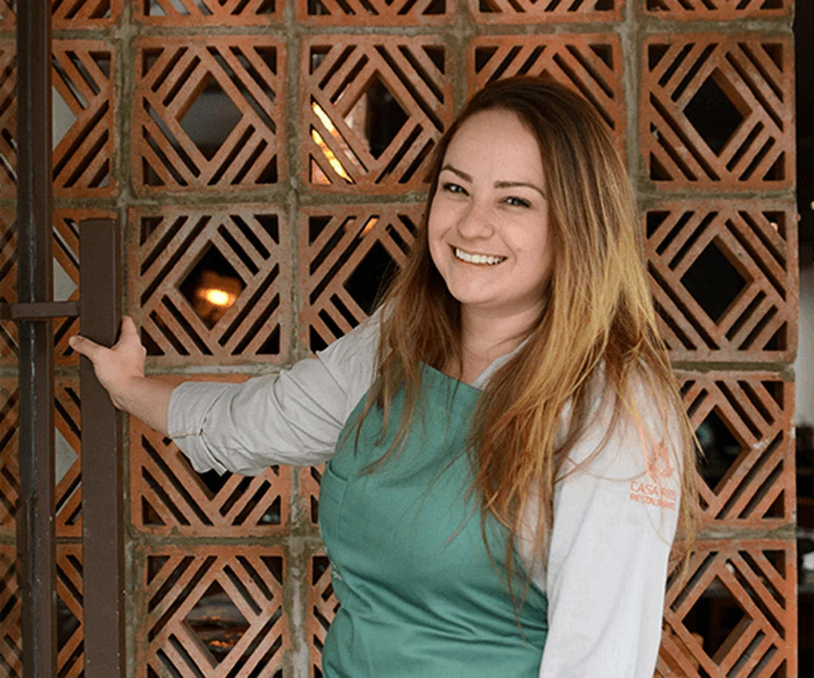

Chef
Giovanna Perrone
Desde muito nova, Giovanna já sabia que queria trabalhar com gastronomia, uma ligação que sempre teve por muita influência de suas avós. Aos 17 anos entrou na faculdade de gastronomia. Se encontrou como cozinheira no garde-manger e carrega essa delicadeza e técnica em sua cozinha.
Instagram @gi.perrone →